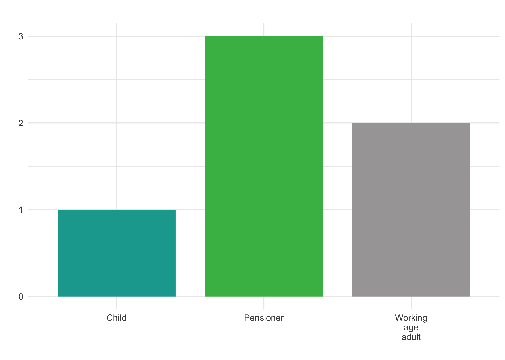
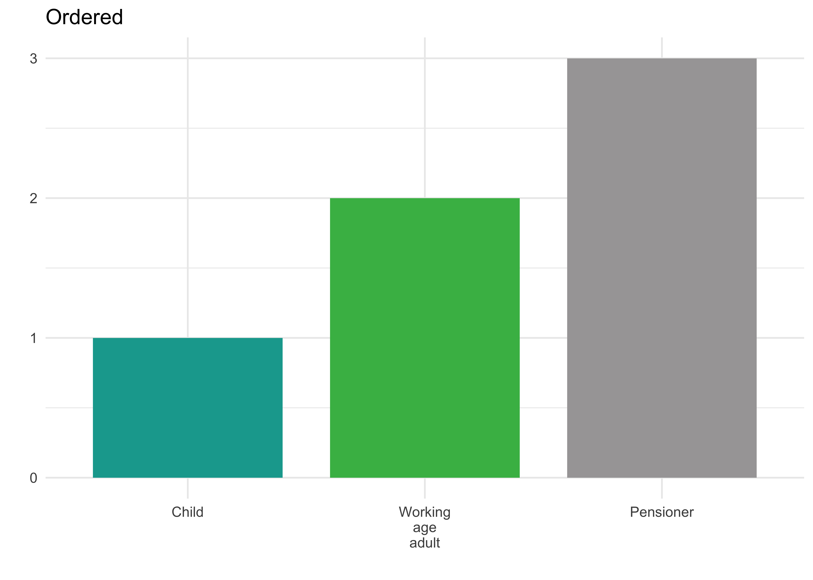

age_category <- c("Child", "Working-age Adult", "Pensioner")2022-10-17
This is a guest post from Nicola Rennie. Nicola is a statistician and data scientist, passionate about using R to solve problems. She currently works at Jumping Rivers having previously completed her PhD in statistics and operational research at Lancaster University. She enjoys sharing her knowledge of R, creating data visualizations, and helping clients learn from their data.
Before we get started, I want to clarify that this blog post is about developing Shiny applications in multiple spoken languages - not multiple programming languages.
In the last few years, we’ve seen many Shiny dashboards that display COVID-19 statistics. Global public health data is a perfect example of the information you need to communicate to as wide an audience as possible. And that often means in as many languages as possible. However, the vast majority of websites and apps (not just Shiny apps) are developed in English. But most of the world doesn’t speak English…
Language selectors are becoming more commonplace in traditional web development, and we must ensure that Shiny apps aren’t left behind. That being said, multilingual Shiny apps are not straightforward to build. Translation affects almost every single aspect of a Shiny app. Something that was a simple UI element suddenly becomes a reactive expression that relies on user input. Everything, from which logo is displayed, to the legend labels in a plot, to the text in the footer, needs to update with the user’s choice of language.
There are a few packages in existence (most notably {shi18ny}) which help developers automate the translation process. However, the number of languages these packages work with is often limited, and their built-in dictionaries don’t often include domain-specific terms either. So when Jumping Rivers was tasked with creating a bilingual Shiny app, we developed the translation capabilities directly in the app itself.
The short version: every element, whether a UI or server component, contains a call to lang(), which specifies the language that a user currently has selected. Okay, so it’s a bit more complicated than that…
During the development process, we stumbled upon many little issues that cropped up because of the translation. It was one of those seemingly simple tasks that I talked about in my rstudio::conf(2022) lightning talk - reordering factors.
Most of you will have come across the fact that, in the absence of other instructions, R will sort your character vectors alphabetically. There are two reasons this might be a problem. First of all, alphabetical ordering doesn’t always make sense. For example, let’s say we have three age categories encoded as character strings:
age_category <- c("Child", "Working-age Adult", "Pensioner")If R sorts these by default, we get:
sort(age_category)[1] "Child" "Pensioner" "Working-age Adult"library(ggplot2)
df <- data.frame(
EN = c("Child",
"Working\nage\nadult",
"Pensioner"),
value = c(1, 2, 3)
)
ggplot(df) +
geom_col(aes(x = EN,
y = value,
fill = EN),
width = 0.8) +
labs(title = "",
x = "",
y = "") +
scale_fill_manual("",
values = c("#12a79d",
"#44b953",
"#a7a5a6")) +
theme_minimal() +
theme(legend.position = "none")
which doesn’t really make sense. For a single language, it’s an easy fix - we can explicitly set the levels of our factors:
age_category <- factor(age_category,
levels = c("Child",
"Working-age Adult",
"Pensioner"))sort(age_category)[1] Child Working-age Adult Pensioner
Levels: Child Working-age Adult Pensionerdf2 <- data.frame(EN = factor(
c("Child",
"Working\nage\nadult",
"Pensioner"),
levels = c("Child",
"Working\nage\nadult",
"Pensioner")
),
value = c(1, 2, 3))
ggplot(df2) +
geom_col(aes(x = EN,
y = value,
fill = EN),
width = 0.8) +
labs(title = "Ordered",
x = "",
y = "") +
scale_fill_manual("",
values = c("#12a79d",
"#44b953",
"#a7a5a6")) +
theme_minimal() +
theme(legend.position = "none")
But when dealing with multiple languages, factors like this create more problems. Even if the ordering doesn’t really matter and alphabetical sorting is fine, the second problem is that translated character vectors won’t appear in the same order in different languages. So we can’t just let R apply the default options. We also don’t want to manually specify the factor levels in every single language - it’s a bit annoying for a few words in two languages, and unmanageable for thousands of words in many languages.
To fix this issue, we specified a default or primary language (in our case English) that we used for everything related to data processing. Factors were explicitly defined in English only. For our bar chart example, this means creating two separate functions — one to set the break points of our x-axis based on the data in English only.
get_breaks = function(df) {
df %>%
dplyr::select(age) %>%
dplyr::pull() %>%
unique()
}Here, age is an ordered factor. Then a second function to compute the labels, based on the breaks in English, the user’s choice of language, and a look-up table of labels. Essentially, leaving translation to the very last second and translating as little as possible.
get_labels = function(df, lang, labels) {
breaks = get_breaks()
if (lang == "EN") {
labels_x = labels$EN[which(labels$EN %in% breaks)]
} else if (lang == "CY") {
labels_x = labels$CY[which(labels$EN %in% breaks)]
}
return(labels_x)
}I ended up chatting to quite a few people after my lightning talk who had faced similar issues. One problem that particularly caught my attention was the issue of translating between languages that read left-to-right versus right-to-left, for example, between English and Arabic. This adds a whole new level of complexity. Not only do the levels of the factors need to update, but the factor levels also need to be reversed, legends need re-ordering, alignment of text needs to change, and so on.
The easiest solution that comes to mind to address this problem is a language metadata table look-up, e.g.:
| lang | direction |
|---|---|
| EN | l2r |
| CY | l2r |
| AR | r2l |
For the bar chart, the breaks() function would then be updated to look up this information and correctly sort (and reverse) the factors. The labels() function could then remain unchanged. If you also wanted to edit the colors or font sizes, this information could be stored in this same look-up table.
The factor problem was just one of the small issues that arose when incorporating translation into the app, and I think it nicely highlights an important lesson we learned: to keep our Shiny app efficient, translation was always the first problem to think about but the last code to run.
The slides from my rstudio::conf(2022) lightning talk on this topic are available on GitHub. The recording is available on the conference website or you can watch it below. If you’ve developed Shiny apps with outputs in multiple languages, we’d love to hear your thoughts on our approach!